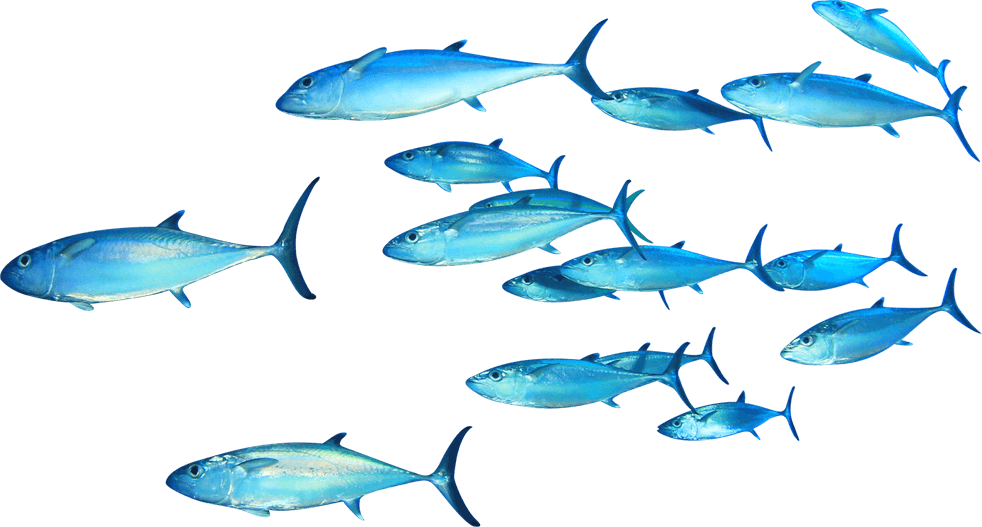
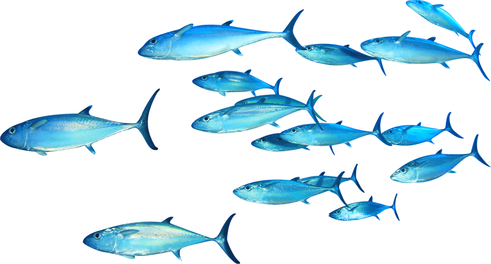

Threats : Life Under Water
Marine conservation faces numerous significant threats that jeopardize the health and sustainability of marine ecosystems. Overfishing is a major concern, leading to the depletion of fish populations, disrupting food chains, and damaging habitats. Pollution, including plastic waste, chemical runoff, oil spills, and sewage discharge, has devastating effects on marine life, water quality, and ecosystem stability. Climate change exacerbates these issues by causing ocean warming, acidification, and sea level rise, which result in coral bleaching, altered migration patterns, and habitat loss. Habitat destruction from coastal development, dredging, trawling, and mining further reduces the availability of critical environments such as coral reefs, mangroves, and seagrass beds, essential for the survival of various marine species. Invasive species introduce new challenges by disrupting native ecosystems, outcompeting local species, and altering habitats. Additionally, bycatch, which involves the unintentional capture of non-target species during fishing activities, leads to the death of marine mammals, turtles, and seabirds. Ocean acidification, driven by increased CO2 absorption, weakens calcium carbonate structures, affecting corals and shellfish, while illegal, unreported, and unregulated (IUU) fishing depletes fish stocks, damages ecosystems, and undermines conservation efforts. Coral bleaching, often caused by stress from temperature changes, pollution, and overexposure to sunlight, results in the death of corals and loss of biodiversity. Marine debris, including plastics and ghost nets, entangles marine life, causes ingestion-related deaths, and spreads toxins. Addressing these threats requires coordinated global efforts, sustainable practices, and effective policy implementation to protect and preserve marine ecosystems for future generations.
 
